- 2주 전 학회에서 머신러닝 기초 강의를 했습니다.
- Google Forms를 통해서 참석자들에게 피드백을 받았습니다.
- 답변 정리에 Matplotlib 함수를 적극적으로 사용했습니다.
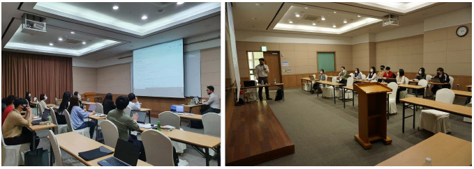
1. Google Forms
Google Forms는 간단하게 설문조사를 할 수 있는 플랫폼입니다.
회의나 회식 일정을 잡는데 사용하기도 편하고 피드백을 받기 좋습니다.
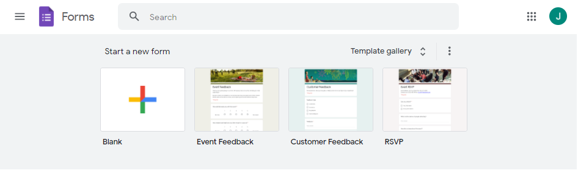결과를 자체적으로 취합해서 보여주기 때문에 사실상 추가 처리가 필요치 않습니다.
스크린샷만 찍어서 보고서에 붙여넣어도 무방한 퀄리티입니다.
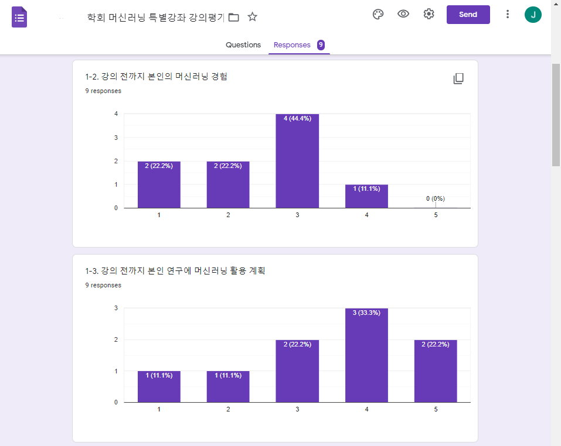그런데 가끔 문제가 발생합니다.
강의평가 중 강의 속도와 강의 난이도는 5점 만점 중 3점에 몰려있습니다.
강의 속도와 난이도 조절을 실패한 것 처럼 보입니다.
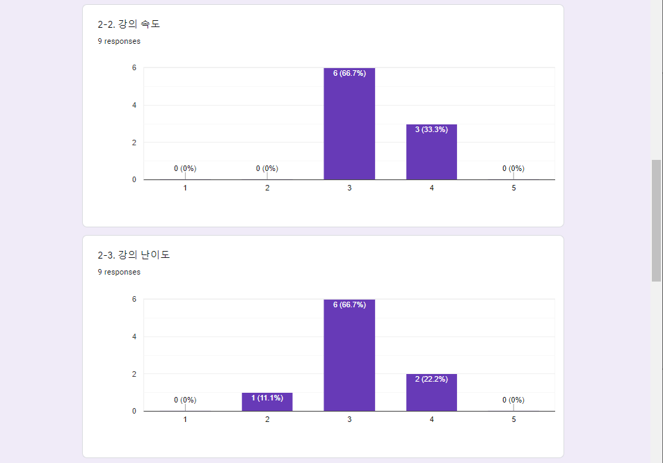그러나 실제 문항을 보면 너무 느림과 너무 빠름의 딱 중간입니다.
속도와 난이도가 적절했음을 알 수 있습니다.
그림을 기계적으로 갖다붙이면 강의를 진행한 입장에서 몹시 억울할 것입니다.
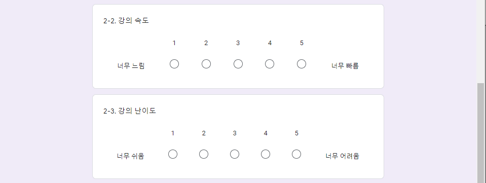Google Forms에서는 원본 데이터 다운로드를 제공합니다.
그림을 다운받아 새로 그리면 됩니다.
파이썬에서 진행합니다.
2. Python Visualization
2.1. 데이터 다운로드
설문조사 결과지의 오른쪽 위를 클릭해 데이터를 받습니다.
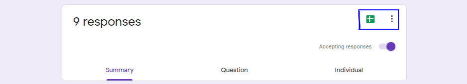설문조사명이 파일명이 됩니다.
적절히 짧게 바꿔 노트북에서 읽어옵니다.
데이터 중 한글이 있으므로 한글 사용 설정도 함께 합니다.
1
2
3
4
5
6
7
8
9
10
11
12
13
14
15
16
17
18%matplotlib inline
# 필요 라이브러리 읽어오기
import seaborn as sns
import numpy as pd
import pandas as pd
import matplotlib.pyplot as plt
sns.set_context("talk")
sns.set_style("white")
# 한글 사용 설정
plt.rcParams['font.family']='NanumGothic'
plt.rcParams['axes.unicode_minus'] = False
# 데이터 파일 읽기
df = pd.read_csv("googlesurvey.csv")
df.head(3)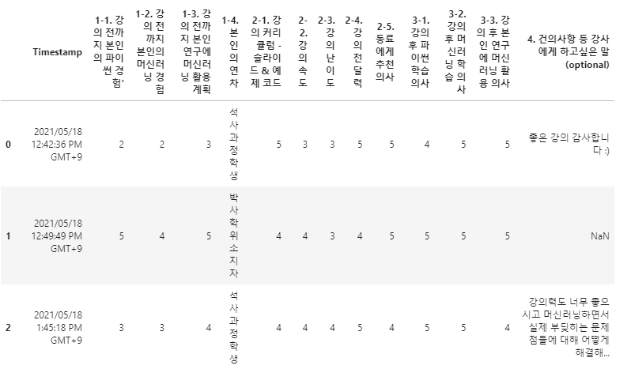
2.2. 문항 추출
- 컬럼명이 문항입니다.
1
2Qs = df.columns
Qs- 실행 결과
1
2
3
4
5
6
7Index(['Timestamp', '1-1. 강의 전까지 본인의 파이썬 경험'', '1-2. 강의 전까지 본인의 머신러닝 경험',
'1-3. 강의 전까지 본인 연구에 머신러닝 활용 계획', '1-4. 본인의 연차',
'2-1. 강의 커리큘럼 - 슬라이드 & 예제 코드', '2-2. 강의 속도', '2-3. 강의 난이도',
'2-4. 강의 전달력', '2-5. 동료에게 추천 의사', '3-1. 강의 후 파이썬 학습 의사',
'3-2. 강의 후 머신러닝 학습 의사', '3-3. 강의 후 본인 연구에 머신러닝 활용 의사',
'4. 건의사항 등 강사에게 하고싶은 말 (optional)'],
dtype='object')
- 실행 결과
2.3. 시각화 함수 작성
- 모든 문항은 본인의 연차항목을 제외하고 5점 척도로 되어 있습니다.
- 형식은 histogram, 또는 bar plot이 적절합니다.
- 데이터의 전반적인 분포가 중요하고, 데이터간 변화량은 중요치 않기 때문입니다.
시각화 함수는 다음과 같이 작성되었습니다.
부분별 설명은 주석으로 달았습니다.
1
2
3
4
5
6
7
8
9
10
11
12
13
14
15
16
17
18
19
20
21
22
23
24
25
26
27
28
29
30
31
32
33
34
35
36
37
38
39
40
41
42
43
44
45
46
47
48
49
50
51
52
53
54
55
56
57
58
59
60
61
62
63
64
65
66
67
68
69
70
71from matplotlib import cm
def plot_count(x, data, color="C0", cmap=None, ticks=range(1, 6), ticklabels=None,
orient="v", ax=None, ec="none", figsize=(10, 5), filename=None):
# 지정된 Axes가 없으면 새로 만들기. 크기는 figuresize에서 입력받음.
if not ax:
fig, ax = plt.subplots(figsize=figsize, constrained_layout=True)
# value별로 갯수 세기. 데이터가 존재하지 않으면 0을 채움.
val_cnt = data[x].value_counts().to_dict()
cnt_list = [val_cnt[k] if k in val_cnt.keys() else 0 for k in ticks]
# bar의 방향. v(ertical) 또는 h(orizontal).
if orient == "v":
ax.bar(x=range(1, 6), height=cnt_list, fc=color, ec=ec)
elif orient == "h":
ax.barh(y=range(1, 6), width=cnt_list, fc=color, ec=ec)
# 변수 이름은 xlabel이지만 실제로는 title. 시각화 코드 수정이 남긴 흔적.
# Google Forms에서 받은 데이터에 홑따옴표(')가 있어 제거 필요.
# font 색상, 크기, 두께를 fontdict로 설정
xlabel = x.replace("'","")
font_label = {"color":"gray", "fontsize":"large", "fontweight":"bold"}
# title 지정
ax.set_title(xlabel, fontdict=font_label, pad=12)
# bar 방향에 따라 ticklabels를 xticks 또는 yticks로 설정
# ticklabels 입력과 무관하게 데이터값이 보이는 위치에 정수만 출력하고 grid 설정
# ticklabels를 입력받으면 입력받은 값 출력
if orient == "v":
yticks = [int(y) for y in ax.get_yticks() if not (y*10)%10]
ax.set_yticks(yticks)
ax.set_yticklabels(yticks)
ax.grid(axis="y")
ax.set_ylabel("count", fontdict=font_label, labelpad=8)
if ticklabels:
ax.set_xticks(range(1, 6))
ax.set_xticklabels(ticklabels, fontweight="bold")
ax.set_xlabel("")
if orient == "h":
xticks = [int(x) for x in ax.get_xticks() if not (x*10)%10]
ax.set_xticks(xticks)
ax.set_xticklabels(xticks)
ax.grid(axis="x")
ax.set_xlabel("count", fontdict=font_label, labelpad=8)
if ticklabels:
ax.set_yticks(range(1, 6))
ax.set_yticklabels(ticklabels, fontweight="bold")
ax.set_ylabel("")
# 입력받은 컬러맵 사용
# 데이터의 범위보다 2개 더 많은 컬러맵 색상을 지정하고 첫 색상과 끝 색상은 사용하지 않음
if cmap:
ncmaps = 7
if ticklabels:
ncmaps = len(ticklabels) + 2
# 컬러맵 불러오기
cmap_ = plt.get_cmap(cmap, ncmaps)
for i, p in enumerate(ax.patches, 1):
p.set_facecolor(cmap_(i))
# 파일명 입력시 입력받은 이름으로 저장.
if filename:
fig.savefig(filename, dpi=200)
return ax시각화 결과물이 출력될 Axes를 입력받을 수도 있고 그렇지 않을 수도 있습니다.
bar plot을 가로 방향 또는 세로 방향으로 출력할 수 있습니다.
bar 색상은 특정 색상을 지정할 수도 있지만 컬러맵을 사용할 수 있습니다.
컬러맵 사용시 맨 처음과 끝 색은 사용하지 않도록 설정했습니다. 지나치게 극단적인 색상 차를 방지하기 위해서입니다.
- 코드가 잘 작동하는지 테스트합니다.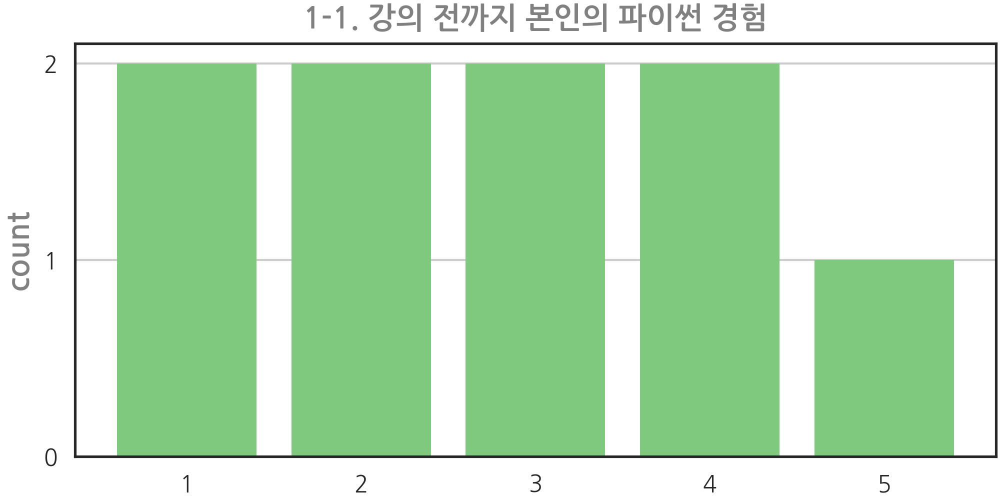
1
plot_count(Qs[1], df)
- 다른 axes에 삽입도 해보고 가로 방향도 돌려봅니다.
- 색상도 지정해보고, 너무 밝은 색에는 테두리도 둘러봅니다.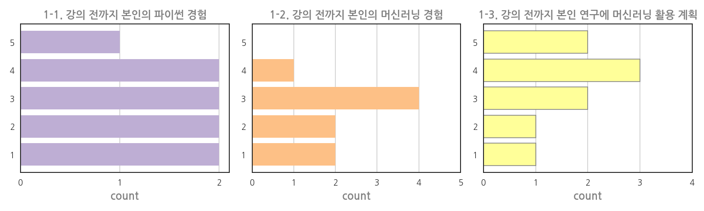
1
2
3
4
5fig, axs = plt.subplots(ncols=3, figsize=(20, 6))
plot_count(Qs[1], df, orient="h", color="C1", ax=axs[0])
plot_count(Qs[2], df, orient="h", color="C2", ax=axs[1])
plot_count(Qs[3], df, orient="h", color="C3", ec="gray", ax=axs[2])
fig.tight_layout()
3. 설문결과 정리
- 크게 4개 항목에 대하여 설문조사를 수행했습니다.
- 보고서에 삽입될 그림이라 가로로 긴 모양을 택했습니다.
1. 강의 전 본인의 상태: 교육 참여자들의 파이썬, 머신러닝 친밀도와 학습 의지 조사
2. 강의 품질: 강의 속도, 난이도 등 조사. 차기 강의에 반영하기 위한 데이터
3. 강의 후 본인의 상태: 강의 효과 확인
4. 건의사항 등 강사에게 하고 싶은 말 (optional): 설문에 담기지 않은 내용 조사
3.1. 강의 전 본인의 상태
교육 참여자
첫 질문은 강의 전까지 파이썬 사용 경험입니다.
1
2plot_count(Qs[1], df, filename="Q1.png", cmap="magma",
ticklabels=["1\n한번도 안 써봤다", "2\n", "3\n", "4\n", "5\n주3회 이상 사용한다"])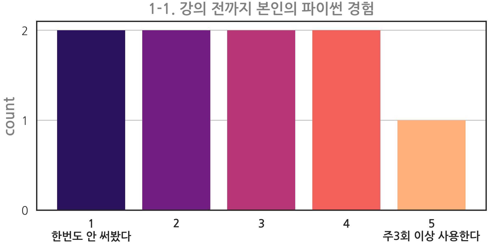
두 번째 질문은 기존 머신러닝 경험입니다.
1
2plot_count(Qs[2], df, filename="Q2.png", cmap="magma",
ticklabels=["1\n한번도 안 해봤다", "2\n", "3\n", "4\n", "5\n필요한 기술을\n능숙하게 사용한다"])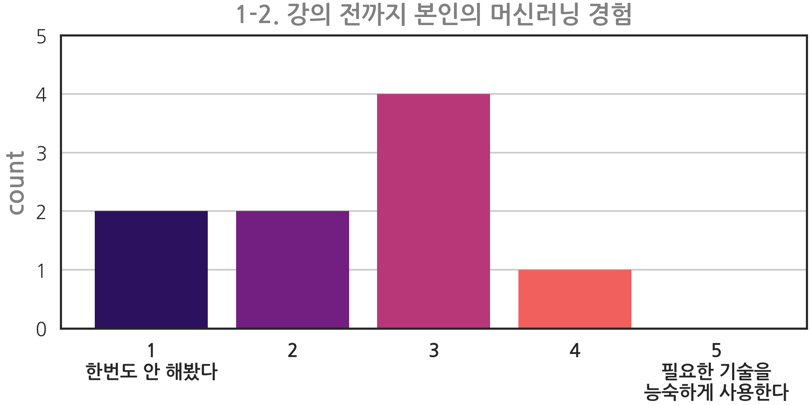
강의 전까지 본인 연구에 머신러닝을 활용할 계획이 있었는지 궁금했습니다.
1
2plot_count(Qs[3], df, filename="Q3.png", cmap="magma",
ticklabels=["1\n전혀 없었다", "2\n", "3\n", "4\n", "5\n매우 구체적이었다"])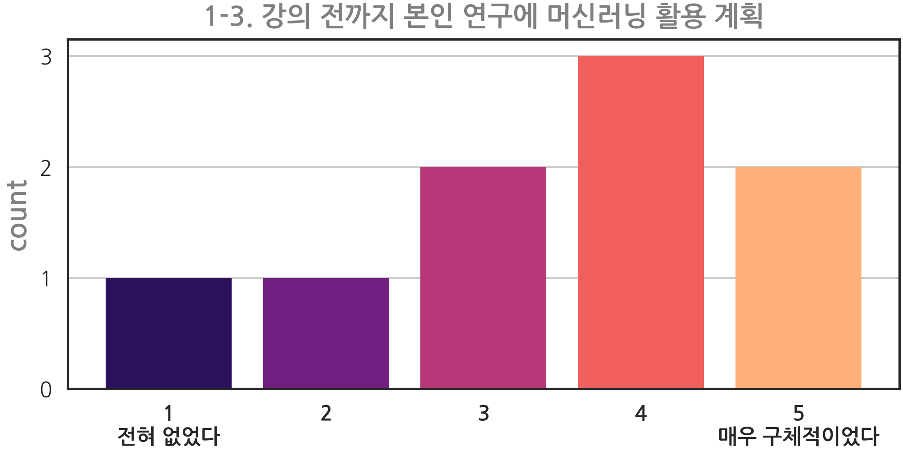
본인의 연차
ticklabels가 길어서 가로로 그렸습니다.
1 | plot_count(Qs[4], df, filename="Q4.png", cmap="Blues", orient="h", |
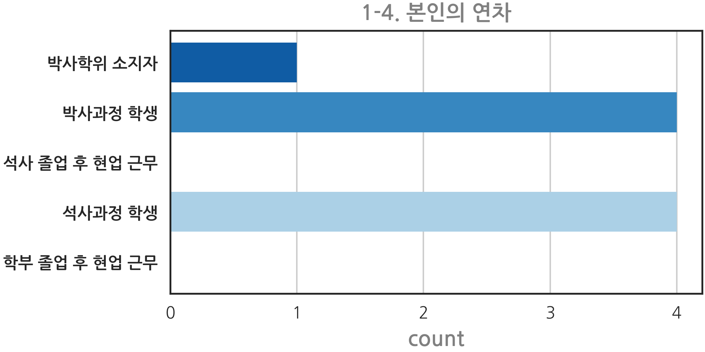
3.2. 강의 품질
- 강의 커리큘럼은 적절했는지 궁금했습니다.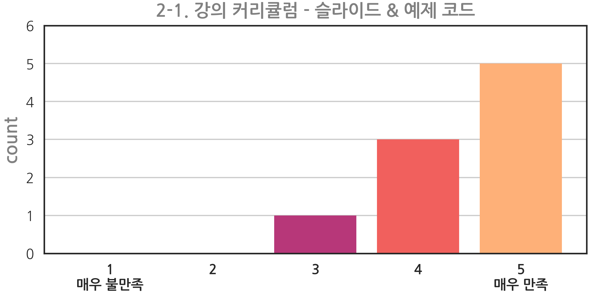
1
2plot_count(Qs[5], df, filename="Q5.png", cmap="magma",
ticklabels=["1\n매우 불만족", "2\n", "3\n", "4\n", "5\n매우 만족"])
- 강의 속도와 난이도가 가장 신경쓰였습니다.
- 강의 속도 항목입니다. 딱 중간이 가장 좋고 양 끝으로 갈수록 좋지 않습니다.
- 내용 전달을 위해 컬러맵을 좌우 대칭의 diverging 타입인 RdBu_r로 바꾸었습니다.
- 가운데가 매우 밝은 회색이라 배경의 흰색과 잘 구분이 안되기에 테두리를 둘렀습니다.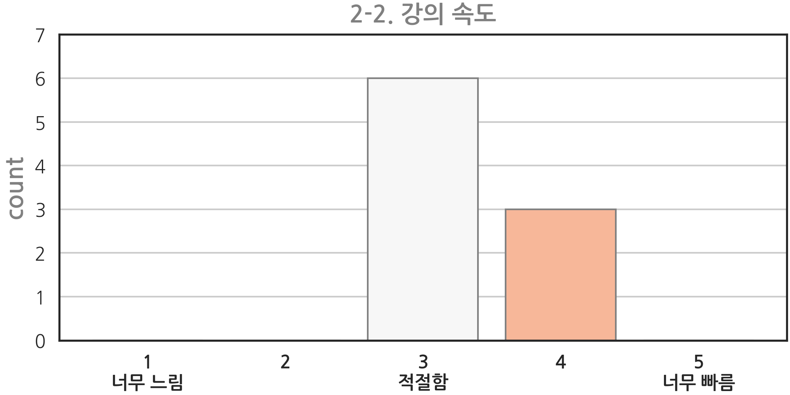
1
2plot_count(Qs[6], df, filename="Q6.png", cmap="RdBu_r", ec="gray",
ticklabels=["1\n너무 느림", "2\n", "3\n적절함", "4\n", "5\n너무 빠름"])
- 강의 난이도입니다.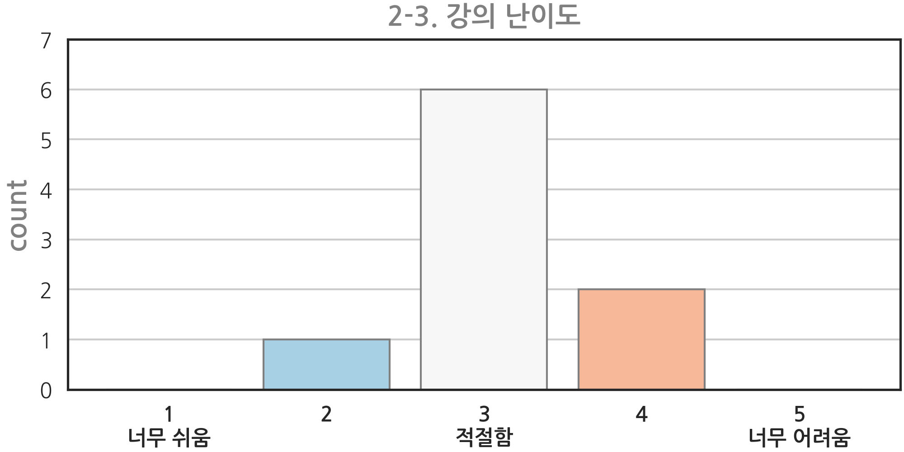
1
2plot_count(Qs[7], df, filename="Q7.png", cmap="RdBu_r", ec="gray",
ticklabels=["1\n너무 쉬움", "2\n", "3\n적절함", "4\n", "5\n너무 어려움"])
- 제가 제대로 했는지 강의 전달력도 많이 궁금했습니다.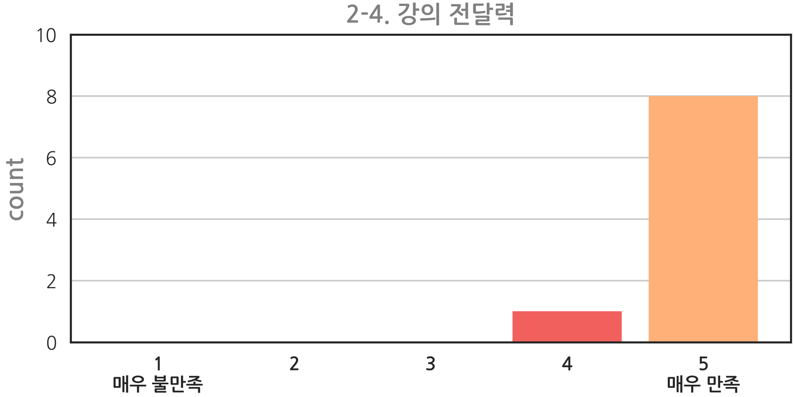
1
2plot_count(Qs[8], df, filename="Q8.png", cmap="magma",
ticklabels=["1\n매우 불만족", "2\n", "3\n", "4\n", "5\n매우 만족"])
- 주최측에서 앞으로 계속 키워가고자 하는 행사입니다.
- 앞으로의 흥행이 중요합니다.
1
2plot_count(Qs[9], df, filename="Q9.png", cmap="magma",
ticklabels=["1\n매우 부정", "2\n", "3\n", "4\n", "5\n매우 긍정"])
- 피드백을 통해 감을 잡을 수 있었습니다.
- 다음 강의가 열린다면, 준비를 더 잘 할 수 있을 것 같습니다.
3.3. 강의 후 본인의 상태
- 강의 전과 비교하여 조금 적극적이 되기를 바랬습니다.
- 파이썬, 머신러닝, 본인 연구에 대한 변화가 있기를 바랬습니다.
- 강의 시작부분에서 한시간 반으로는 맛배기도 안된다. 스스로 공부하시라는 말을 했기에 마음가짐 변화가 가장 중요합니다.
- 함수로 그린 그림을 변수로 받아 수정합니다.
- 설문조사 결과도 강의 전 결과를 그림으로 삽입하여 비교했습니다.
- 함수로 만들어 사용할까 했지만 몇 개 안되어 코드를 복사해서 활용했습니다.
- 먼저, 강의 전 후 파이썬 학습 의사를 조사했습니다.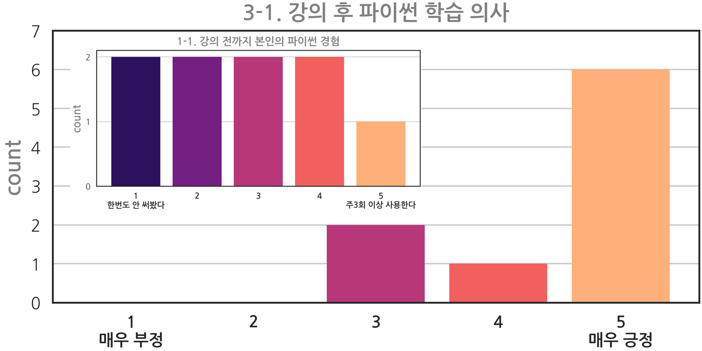
1
2
3
4
5
6
7
8
9
10
11
12
13
14
15
16
17# 함수로 그림을 그립니다.
ax = plot_count(Qs[10], df, filename="Q10.png", cmap="magma",
ticklabels=["1\n매우 부정", "2\n", "3\n", "4\n", "5\n매우 긍정"])
# Axes를 담고 있는 Figure를 호출합니다.
fig = ax.figure
# Figure에 비교할 그림을 붙일 공간을 확보합니다.
ax_prev = fig.add_axes([0.05, 0.4, 0.6, 0.5])
# 강의 전 상태를 불러와서 붙입니다.
im_prev = plt.imread("Q1.png")
ax_prev.imshow(im_prev)
ax_prev.axis(False)
# 결과를 정리합니다.
fig.savefig("Q10.png", dpi=200)
- 강의 후 머신러닝 학습 의사입니다.
- 코드는 거의 동일합니다.
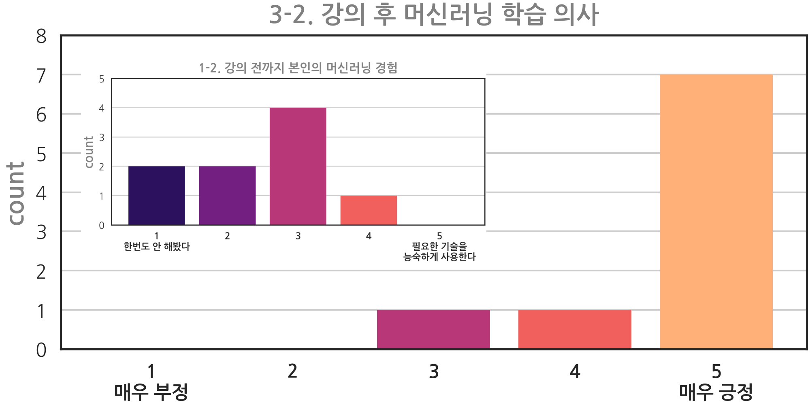
- 강의 후 본인 연구에 머신러닝을 활용할 의사입니다.
- 코드는 거의 동일합니다.
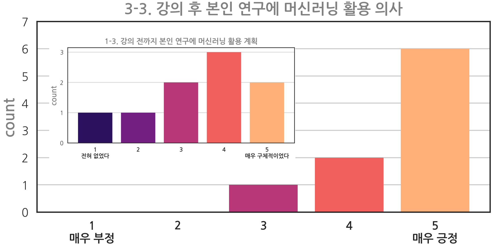
- 전반적으로 강의 전보다 후에 파이썬, 머신러닝, 본인 연구 적용 의사가 높아졌습니다.
- 감사하게도 응답을 잘 해주셨다는 생각도 듭니다만 실제로 이런 영향이 있으면 좋겠습니다. :)
3.4. 건의사항 등 강사에게 하고 싶은 말 (optional)
- 9분 중 6분으로부터 감사한 글들을 받았습니다.
- 세미나 형식의 발표는 다수 경험했고 온라인으로 단발적인 강의를 한 적은 있었습니다.
- 그러나 대면수업으로 진도를 나가는 경험이 처음이었고, 90분으로 커버가 되기 어려운 내용이라 범위와 형식 선정에 신경을 썼습니다.
- 다행히 반응이 호의적이어서 기운이 많이 납니다.
- 다시 한번 감사드리며, 다음 기회에는 더 좋은 발표를 할 수 있으면 좋겠습니다..
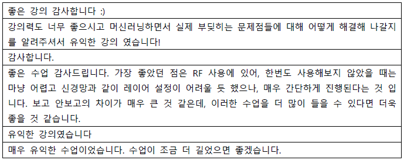